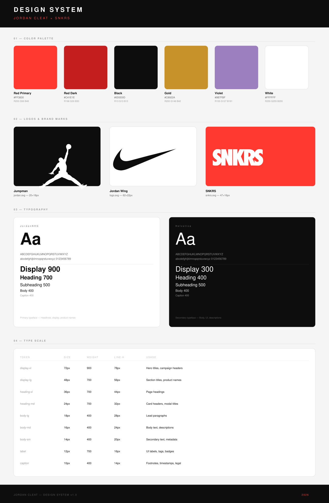

Case Study
Browsing Nike's digital ecosystem, one thing stood out: the Jordan Tiempo Maestro Elite SE Infrared 23 — one of the most visually striking products in the football line, with no dedicated web experience that did it justice. For a cleat with that level of craft and heritage, the absence of an immersive digital narrative was a missed opportunity.
The challenge was clear: design and build a product website that matched the ambition of the cleat itself, merging Jordan Brand's basketball legacy with elite football culture, and doing it entirely through AI-powered tools.
Every decision was deliberate. The project started with deep immersion in Nike and Jordan Brand's visual language — studying typography hierarchies, motion behavior, color application, and the emotional tone that makes the brand recognisable at a glance.
Analysed Nike's existing digital touchpoints to identify gaps. Studied the Jordan Brand design language: color, type, motion, and storytelling structure.
Built a full Figma design system using AI assistance, defining color tokens, typography scale, spacing, and component rules aligned to Nike brand guidelines.
Generated all campaign imagery and product renders using AI tools. Every frame of the scroll animation was AI-produced, then curated for maximum visual impact.
Designed the full user experience with scroll-driven animation, parallax storytelling, colorway switching, and immersive product visualization. All performance-optimised.
This project was built end-to-end using AI, from ideation and image generation to code scaffolding and copy refinement. Each tool played a specific role in accelerating production without compromising quality.
A full design system was created in Figma using AI to ensure brand consistency across every screen. Color tokens, typography scales, spacing grids, and UI components were all defined before a single line of code was written, guaranteeing that Nike and Jordan Brand guidelines were respected throughout the build.

The final site delivers a full immersive journey: a 106-frame scroll-driven 3D product animation, dynamic colorway selector, glassmorphism UI, animated starfield, and a specs section styled like an engineering brief. Fully in Portuguese, honoring the cleat's Brazilian football connection.
I design and build AI-powered digital experiences that turn products into stories worth experiencing.